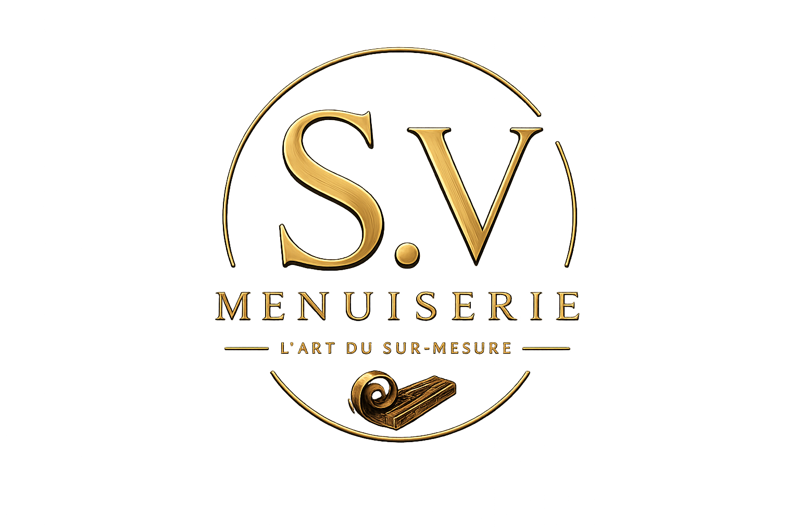

Accueil › Partenaire
Notre partenaire fabricant
SV Menuiserie
Derrière chacun de nos claustras se cache le savoir-faire d'un artisan passionné.
Notre partenaire travaille le bois depuis toujours. Après avoir perfectionné son métier au fil des années, il a créé son entreprise il y a plus de 7 ans avec une ambition simple : fabriquer des réalisations sur mesure alliant qualité, précision et durabilité.
Chaque claustra est conçu avec le plus grand soin, à partir de matériaux sélectionnés pour leur qualité. Grâce à son expérience et à sa maîtrise du travail du bois, chaque pièce bénéficie d'une finition irréprochable et d'une fabrication artisanale.
En faisant confiance à notre entreprise, vous choisissez également un partenaire reconnu pour son expertise, son exigence et sa passion du bois. C'est cette collaboration qui nous permet de vous proposer des claustras uniques, fabriqués en France, pensés pour sublimer durablement votre intérieur.
